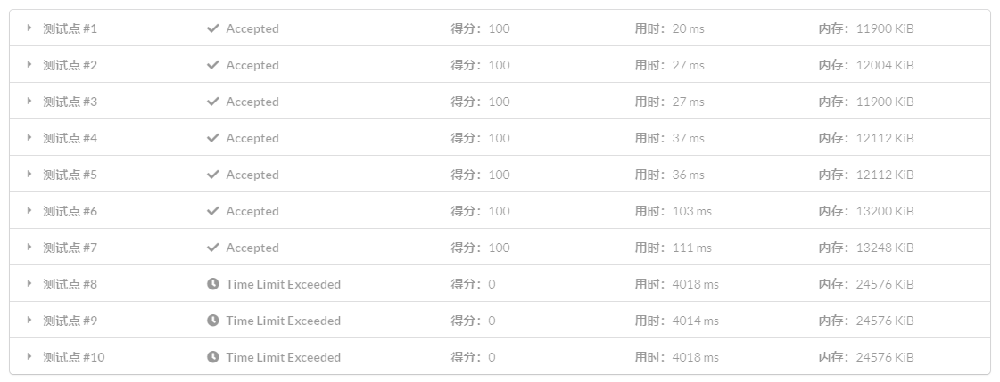

Sa
一些约定¶
字符串相关的定义请参考 字符串基础。
字符串下标从 1 开始。
" 后缀 i" 代指以第 i 个字符开头的后缀。
后缀数组是什么？¶
后缀数组（Suffix Array）主要是两个数组：sa 和 rk。
其中，sa[i] 表示将所有后缀排序后第 i 小的后缀的编号。rk[i] 表示后缀 i 的排名。
这两个数组满足性质：sa[rk[i]]=rk[sa[i]]=i。
后缀数组示例：

后缀数组怎么求？¶
O(n^2logn) 做法¶
我相信这个做法大家还是能自己想到的，用 string+sort 就可以了。由于比较两个字符串是 O(n) 的，所以排序是 O(n^2\log n) 的。
O(nlog^2n) 做法¶
这个做法要用到倍增的思想。
先对每个长度为 1 的子串（即每个字符）进行排序。
假设我们已经知道了长度为 w 的子串的排名 rk_w[1..n]（即，rk_w[i] 表示 s[i..\min(i+w-1,n)] 在 \{s[x..\min(x+w-1,n)]\ |\ x\in[1,n]\} 中的排名），那么，以 rk_w[i] 为第一关键字，rk_w[i+w] 为第二关键字（若 i+w>n 则令 rk_w[i+w] 为无穷小）进行排序，就可以求出 rk_{2w}[1..n]。
倍增排序示意图：

如果用 sort 进行排序，复杂度就是 O(n\log^2n) 的。
参考代码
1 2 3 4 5 6 7 8 9 10 11 12 13 14 15 16 17 18 19 20 21 22 23 24 25 26 27 28 29 30 31 32 33 34 35 36 37 38 39 40 41 42 | |
O(nlogn) 做法¶
在刚刚的 O(n\log^2n) 做法中，单次排序是 O(n\log n) 的，如果能 O(n) 排序，就能 O(n\log n) 计算后缀数组了。
由于计算后缀数组的过程中排序的关键字是排名，值域为 O(n)，并且是一个双关键字的排序，可以使用基数排序优化至 O(n)。
参考代码
1 2 3 4 5 6 7 8 9 10 11 12 13 14 15 16 17 18 19 20 21 22 23 24 25 26 27 28 29 30 31 32 33 34 35 36 37 38 39 40 41 42 43 44 45 46 47 48 | |
一些常数优化¶
如果你把上面那份代码交到 LOJ #111: 后缀排序 上：

这是因为，上面那份代码的常数的确很大。
第二关键字无需计数排序¶
实际上，像这样就可以了：
1 2 3 4 | |
意会一下，先把 s[i+w..i+2w-1] 为空串（即第二关键字为无穷小）的位置放前面，再把剩下的按排好的顺序放进去。
优化计数排序的值域¶
每次对 rk 进行去重之后，我们都计算了一个 p，这个 p 即是 rk 的值域，将值域改成它即可。
将 rk[id[i]] 存下来，减少不连续内存访问¶
这个优化在数据范围较大时效果非常明显。
用函数 cmp 来计算是否重复¶
同样是减少不连续内存访问，在数据范围较大时效果比较明显。
把 oldrk[sa[i]] == oldrk[sa[i - 1]] && oldrk[sa[i] + w] == oldrk[sa[i - 1] + w] 替换成 cmp(sa[i], sa[i - 1], w)，bool cmp(int x, int y, int w) { return oldrk[x] == oldrk[y] && oldrk[x + w] == oldrk[y + w]; }。
若排名都不相同可直接生成后缀数组¶
考虑新的 rk 数组，若其值域为 [1,n] 那么每个排名都不同，此时无需再排序。
参考代码
1 2 3 4 5 6 7 8 9 10 11 12 13 14 15 16 17 18 19 20 21 22 23 24 25 26 27 28 29 30 31 32 33 34 35 36 37 38 39 40 41 42 43 44 45 46 47 48 | |
O(n) 做法¶
在一般的题目中，常数较小的倍增求后缀数组是完全够用的，求后缀数组以外的部分也经常有 O(n\log n) 的复杂度，倍增求解后缀数组不会成为瓶颈。
但如果遇到特殊题目、时限较紧的题目，或者是你想追求更短的用时，就需要学习 O(n) 求后缀数组的方法。
SA-IS¶
可以参考 诱导排序与 SA-IS 算法。
DC3¶
可以参考[2009]后缀数组——处理字符串的有力工具 by. 罗穗骞。
后缀数组的应用¶
寻找最小的循环移动位置¶
将字符串 S 复制一份变成 SS 就转化成了后缀排序问题。
例题：「JSOI2007」字符加密。
在字符串中找子串¶
任务是在线地在主串 T 中寻找模式串 S。在线的意思是，我们已经预先知道知道主串 T，但是当且仅当询问时才知道模式串 S。我们可以先构造出 T 的后缀数组，然后查找子串 S。若子串 S 在 T 中出现，它必定是 T 的一些后缀的前缀。因为我们已经将所有后缀排序了，我们可以通过在 p 数组中二分 S 来实现。比较子串 S 和当前后缀的时间复杂度为 O(|S|)，因此找子串的时间复杂度为 O(|S|\log |T|)。注意，如果该子串在 T 中出现了多次，每次出现都是在 p 数组中相邻的。因此出现次数可以通过再次二分找到，输出每次出现的位置也很轻松。
从字符串首尾取字符最小化字典序¶
题意：给你一个字符串，每次从首或尾取一个字符组成字符串，问所有能够组成的字符串中字典序最小的一个。
题解
暴力做法就是每次最坏 O(n) 地判断当前应该取首还是尾（即比较取首得到的字符串与取尾得到的反串的大小），只需优化这一判断过程即可。
由于需要在原串后缀与反串后缀构成的集合内比较大小，可以将反串拼接在原串后，并在中间加上一个没出现过的字符（如 #，代码中可以直接使用空字符），求后缀数组，即可 O(1) 完成这一判断。
参考代码
1 | |
height 数组¶
LCP（最长公共前缀）¶
两个字符串 S 和 T 的 LCP 就是最大的 x(x\le \min(|S|, |T|)) 使得 S_i=T_i\ (\forall\ 1\le i\le x)。
下文中以 lcp(i,j) 表示后缀 i 和后缀 j 的最长公共前缀（的长度）。
height 数组的定义¶
height[i]=lcp(sa[i],sa[i-1])，即第 i 名的后缀与它前一名的后缀的最长公共前缀。
height[1] 可以视作 0。
O(n) 求 height 数组需要的一个引理¶
height[rk[i]]\ge height[rk[i-1]]-1
证明：
当 height[rk[i-1]]\le1 时，上式显然成立（右边小于等于 0）。
当 height[rk[i-1]]>1 时：
设后缀 i-1 为 aAD（A 是一个长度为 height[rk[i-1]]-1 的字符串），那么后缀 i 就是 AD。设后缀 sa[rk[i-1]-1] 为 aAB，那么 lcp(i-1,sa[rk[i-1]-1])=aA。由于后缀 sa[rk[i-1]-1]+1 是 AB，一定排在后缀 i 的前面，所以后缀 sa[rk[i]-1] 一定含有前缀 A，所以 lcp(i,sa[rk[i]-1]) 至少是 height[rk[i-1]]-1。
简单来说：
i-1：aAD
i：AD
sa[rk[i-1]-1]：aAB
sa[rk[i-1]-1]+1：AB
sa[rk[i]-1]：A[B/C]
lcp(i,sa[rk[i]-1])：AX（X 可能为空）
O(n) 求 height 数组的代码实现¶
利用上面这个引理暴力求即可：
1 2 3 4 5 6 | |
k 不会超过 n，最多减 n 次，所以最多加 2n 次，总复杂度就是 O(n)。
height 数组的应用¶
两子串最长公共前缀¶
lcp(sa[i],sa[j])=\min\{height[i+1..j]\}
感性理解：如果 height 一直大于某个数，前这么多位就一直没变过；反之，由于后缀已经排好序了，不可能变了之后变回来。
严格证明可以参考[2004]后缀数组 by. 徐智磊。
有了这个定理，求两子串最长公共前缀就转化为了 RMQ 问题。
比较一个字符串的两个子串的大小关系¶
假设需要比较的是 A=S[a..b] 和 B=S[c..d] 的大小关系。
若 lcp(a, c)\ge\min(|A|, |B|)，A<B\iff |A|<|B|。
否则，A<B\iff rk[a]< rk[c]。
不同子串的数目¶
子串就是后缀的前缀，所以可以枚举每个后缀，计算前缀总数，再减掉重复。
“前缀总数”其实就是子串个数，为 n(n+1)/2。
如果按后缀排序的顺序枚举后缀，每次新增的子串就是除了与上一个后缀的 LCP 剩下的前缀。这些前缀一定是新增的，否则会破坏 lcp(sa[i],sa[j])=\min\{height[i+1..j]\} 的性质。只有这些前缀是新增的，因为 LCP 部分在枚举上一个前缀时计算过了。
所以答案为：
\frac{n(n+1)}{2}-\sum\limits_{i=2}^nheight[i]
出现至少 k 次的子串的最大长度¶
题解
出现至少 k 次意味着后缀排序后有至少连续 k 个后缀的 LCP 是这个子串。
所以，求出每相邻 k-1 个 height 的最小值，再求这些最小值的最大值就是答案。
可以使用单调队列 O(n) 解决，但使用其它方式也足以 AC。
参考代码
1 | |
是否有某字符串在文本串中至少不重叠地出现了两次¶
可以二分目标串的长度 |s|，将 h 数组划分成若干个连续 LCP 大于等于 |s| 的段，利用 RMQ 对每个段求其中出现的数中最大和最小的下标，若这两个下标的距离满足条件，则一定有长度为 |s| 的字符串不重叠地出现了两次。
连续的若干个相同子串¶
我们可以枚举连续串的长度 |s|，按照 |s| 对整个串进行分块，对相邻两块的块首进行 LCP 与 LCS 查询，具体可见[2009]后缀数组——处理字符串的有力工具。
例题：「NOI2016」优秀的拆分。
结合并查集¶
某些题目求解时要求你将后缀数组划分成若干个连续 LCP 长度大于等于某一值的段，亦即将 h 数组划分成若干个连续最小值大于等于某一值的段并统计每一段的答案。如果有多次询问，我们可以将询问离线。观察到当给定值单调递减的时候，满足条件的区间个数总是越来越少，而新区间都是两个或多个原区间相连所得，且新区间中不包含在原区间内的部分的 h 值都为减少到的这个值。我们只需要维护一个并查集，每次合并相邻的两个区间，并维护统计信息即可。
经典题目：「NOI2015」品酒大会
结合线段树¶
某些题目让你求满足条件的前若干个数，而这些数又在后缀排序中的一个区间内。这时我们可以用归并排序的性质来合并两个结点的信息，利用线段树维护和查询区间答案。
结合单调栈¶
例题：「AHOI2013」差异
题解
被加数的前两项很好处理，为 n(n-1)(n+1)/2（每个后缀都出现了 n-1 次，后缀总长是 n(n+1)/2），关键是最后一项，即后缀的两两 LCP。
我们知道 lcp(i,j)=k 等价于 \min\{height[i+1..j]\}=k。所以，可以把 lcp(i,j) 记作 \min\{x|i+1\le x\le j, height[x]=lcp(i,j)\} 对答案的贡献。
考虑每个位置对答案的贡献是哪些后缀的 LCP，其实就是从它开始向左若干个连续的 height 大于它的后缀中选一个，再从向右若干个连续的 height 不小于它的后缀中选一个。这个东西可以用 单调栈 计算。
单调栈部分类似于 Luogu P2659 美丽的序列 以及 悬线法。
参考代码
1 | |
类似的题目：「HAOI2016」找相同字符。
习题¶
- Uva 760 - DNA Sequencing
- Uva 1223 - Editor
- Codechef - Tandem
- Codechef - Substrings and Repetitions
- Codechef - Entangled Strings
- Codeforces - Martian Strings
- Codeforces - Little Elephant and Strings
- SPOJ - Ada and Terramorphing
- SPOJ - Ada and Substring
- UVA - 1227 - The longest constant gene
- SPOJ - Longest Common Substring
- UVA 11512 - GATTACA
- LA 7502 - Suffixes and Palindromes
- GYM - Por Costel and the Censorship Committee
- UVA 1254 - Top 10
- UVA 12191 - File Recover
- UVA 12206 - Stammering Aliens
- Codechef - Jarvis and LCP
- LA 3943 - Liking's Letter
- UVA 11107 - Life Forms
- UVA 12974 - Exquisite Strings
- UVA 10526 - Intellectual Property
- UVA 12338 - Anti-Rhyme Pairs
- DevSkills Reconstructing Blue Print of Life
- UVA 12191 - File Recover
- SPOJ - Suffix Array
- LA 4513 - Stammering Aliens
- SPOJ - LCS2
- Codeforces - Fake News (hard)
- SPOJ - Longest Commong Substring
- SPOJ - Lexicographical Substring Search
- Codeforces - Forbidden Indices
- Codeforces - Tricky and Clever Password
- LA 6856 - Circle of digits
参考资料¶
本页面中（4070a9b 引入的部分）主要译自博文 Суффиксный массив 与其英文翻译版 Suffix Array。其中俄文版版权协议为 Public Domain + Leave a Link；英文版版权协议为 CC-BY-SA 4.0。
论文：
build本页面最近更新：，更新历史
edit发现错误？想一起完善？ 在 GitHub 上编辑此页！
people本页面贡献者：OI-wiki
copyright本页面的全部内容在 CC BY-SA 4.0 和 SATA 协议之条款下提供，附加条款亦可能应用